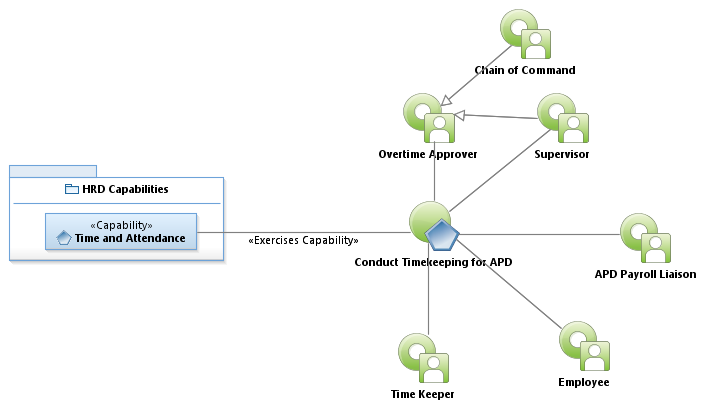
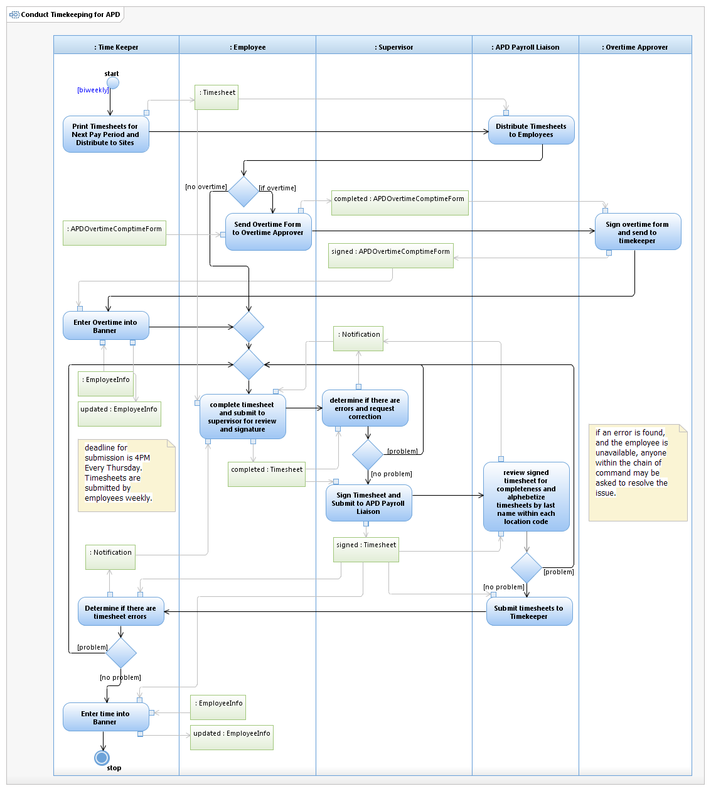

Use Case Model: Conduct Timekeeping for APD
Architect: Aaron Brown, IT Enterprise Architect, Senior
Date Last Modified: 03/02/2013
User Review: Gregg Olson, Leticia Paredes
Date: 03/02/2013
Ensure all employees have submitted accurate timesheets records, and overtime forms.
Follow link to Role Definitions

Use Case Model: Conduct Timekeeping for APD

Activity Model: Conduct Timekeeping for APD
Activity Documentation
| Activity | Documentation |
|---|---|
| Print Timesheets for Next Pay Period and Distribute to Sites | Timesheets are normally printed by the the Wednesday preceding the next pay period |
Note: When the activity is self explanatory no documentation is provided.